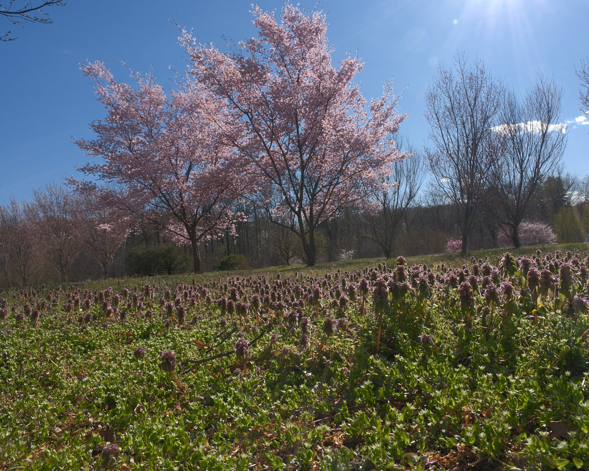
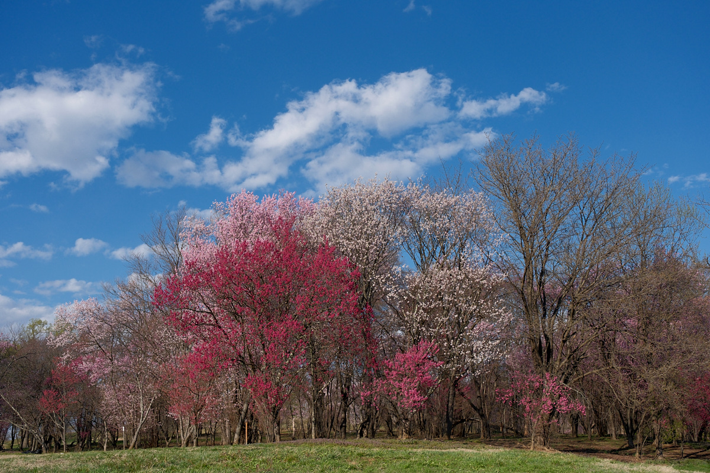
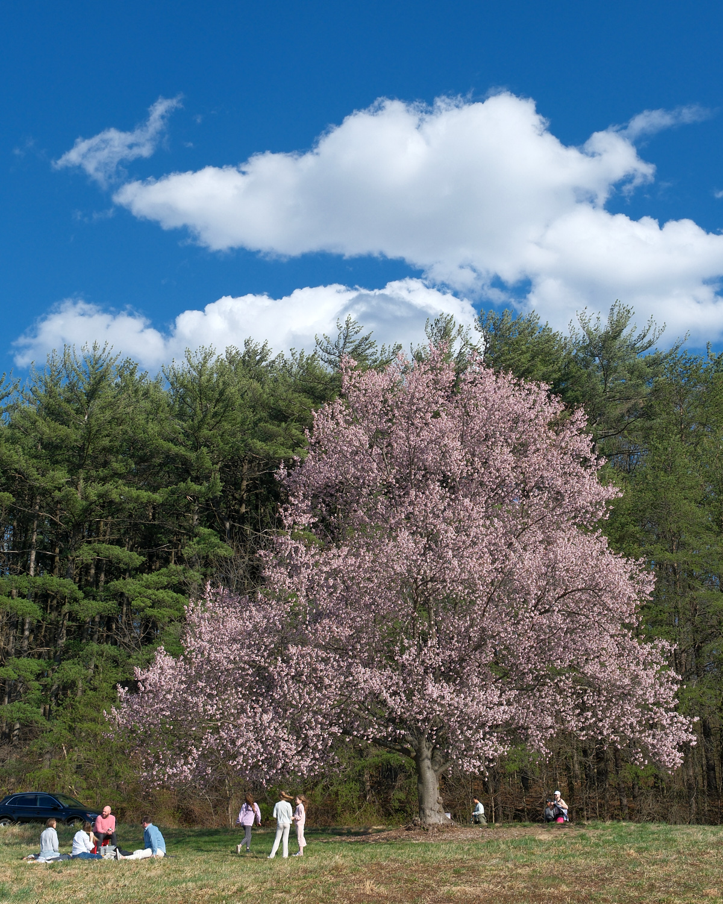

Spring arrived this Saturday afternoon. Late in the afternoon, Ollie and I headed to the National Arboretum looking for blossoms.
As soon as we parked, we could tell we’d have plenty of beautiful trees to explore. In each direction, we saw colorful displays.

The arboretum features many different varieties of Cherry trees. It was fun to see three different colors crowded together.

People were enjoying picnics. Others were dressed up for photos. One man dressed as a samurai, and seemed to be meditating with his face deep in a tree.

Ollie seemed to wonder why we were stopping so often. Perhaps he doesn’t like taking photos as much as I do. He seemed to think we ought to be doing some more walking. But there were beautiful trees everywhere, blue skies, and puffy white clouds. After taking our fill of photos, we made a quick loop along the road, passing near the Anacostia River.
Click any photo below for bigger images.